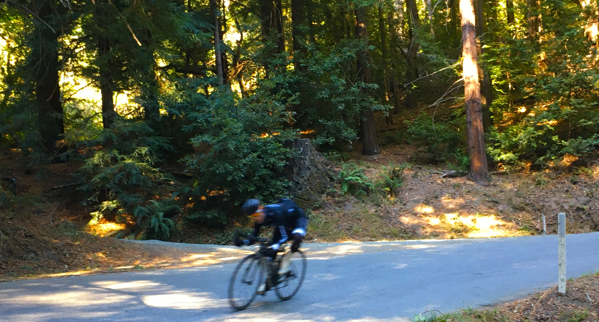

(Photograph courtesy of Josh F.)
Compass - Felder Hiken Group Cycling Jerseys
Commissioned work for Compass Real Estate Company (previously Alain Pinel Realtors) and Felder Hiken Realtor Group. Special attention given to adhearance to company rulebooks for proper implementation of branding and logos. Photos taken on Tunitas Creek Road in San Mateo County.
(Raymond Lam, Illustrator, 2019)